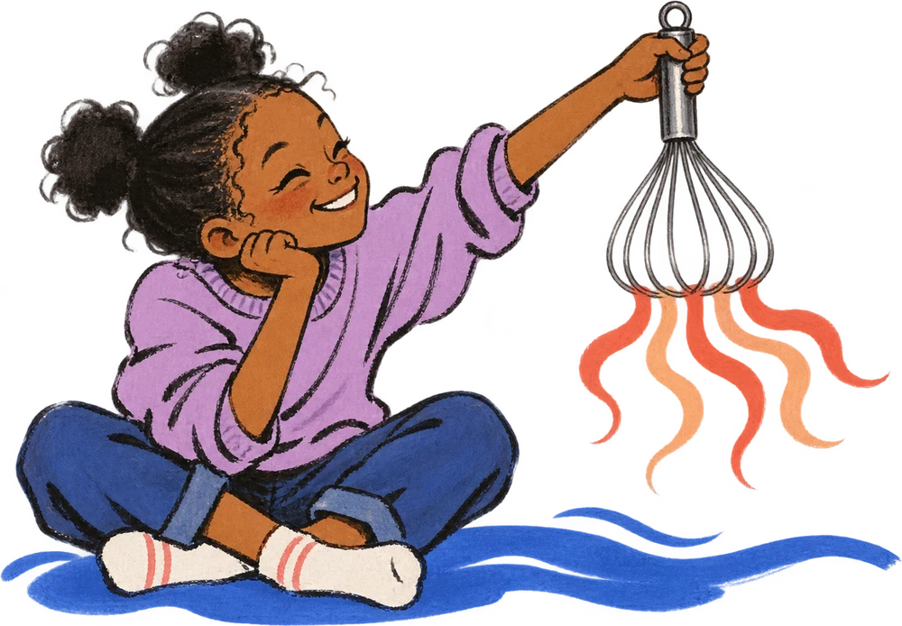

Children imagine with what they know
“Mom, is this real?” my son used to ask me. “Does it matter?”
I told him: “It exists in your imagination. And when the story you create with your friends brings you all together to have a good time, that feeling and that shared moment are real.”
Imagination leads to real feelings and real moments together. They’re often the ones we love most.
Children’s imagination is more rooted in reality than we often assume. They build their pretend worlds from what they have seen, heard, and lived, so every new experience gives them more to imagine with.
Pretend play seems to draw on the same skill as imagining how things could have turned out differently: keeping the real world in mind while exploring another one.
From around age three, children get steadily better at telling what is real from what is pretend. That is what lets them dive deep into a story, and step back out again.
Sources
- Harris, P. L. (2021). Early constraints on the imagination: The realism of young children. Child Development, 92, 466–483.
- Francis, G. A. & Gibson, J. L. (2023). A plausible role of imagination in pretend play, counterfactual reasoning, and executive functions. British Journal of Psychology, 114(3), 749–770.
- Sharon, T. & Woolley, J. D. (2004). Do monsters dream? Young children’s understanding of the fantasy/reality distinction. British Journal of Developmental Psychology, 22, 293–310.

The more there is to discover, the more there is to imagine.